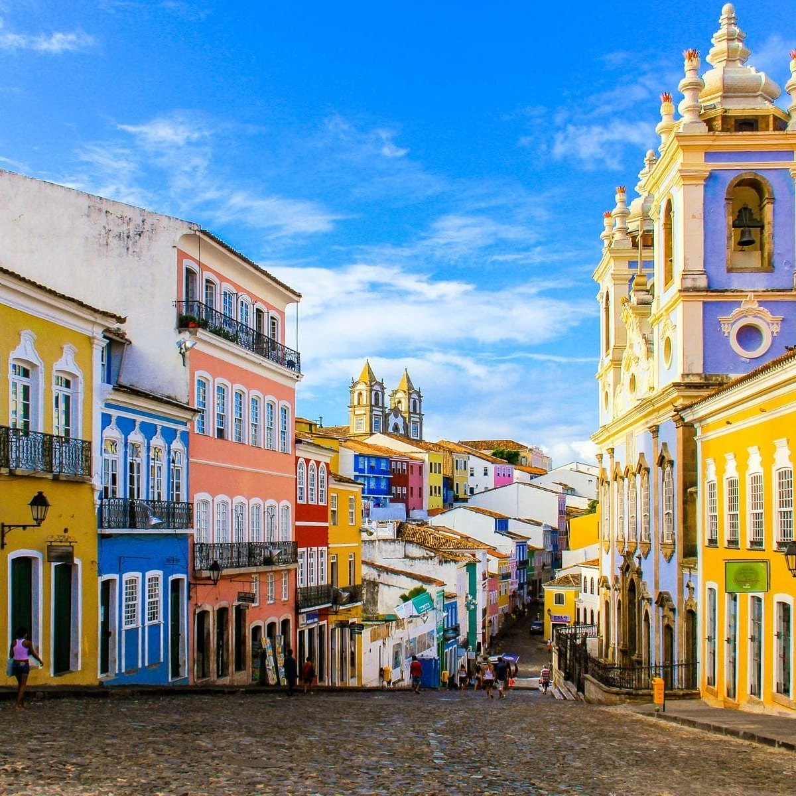

Salvador, Bahia em
Pelourinho (ou carinhosamente, Pelô!)
Possui suas ruas em paralelepípedo e maravilhosos bares com som ao ar livre, lojas de souvenirs afro-baianos e tabuleiros de acarajé. Já os pontos turísticos coloniais, incluem Igrejas e Conventos juntamente com o Museu do Carnaval que conta a hitória da maior festa de rua do mundo.
Curtiu? Acompanhe mais fotos no Google ou em saiba mais.
Farol da Barra

Ou Farol de Santo Antônio, localiza-se na antiga ponta do Padrão, atual Ponta de Santo Antônio, em Salvador no bairro da Barra. Foi o primeiro sistema de sinalização náutica a entrar em operação nas Américas. E hoje é um dos pontos turísticos mais conhecido de Salvador.
Segue uma lista com os melhores bares e restaurante dessa região. Clique aqui
Praia do Forte

Quer um lugar mais calmo para relaxar e aproveitar mais a vinda a Salvador?! Então, não pode deixar de ir à Praia do Forte, um local que fica apenas 80km de distância da capital.
Ficou interessado?! Acesse o site Praia do Forte, onde encontrará informações onde se hospedar e os melhores restaurantes.
E exitem muitos outros lugares interessante na cidade...
- Mercado Modelo
- Ponta de Humaitá - Ribeira
- Barra de Jacuipe
- Porto de Sauipe
- Morro de São Paulo